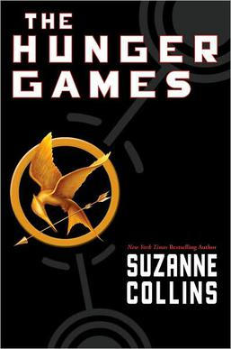

I love to read books. Here are some of my favorites!



"You never forget the face of the person who is your last hope." ~Suzanne Collins, Hunger Games
"Fear doesn't shut you down it wakes you up." ~Veronica Roth, Divergent
"My thoughts are stars I cannot fanthom into constellations." ~John Green, The Fault In Our Stars
"It does not do well to dwell on dreams and forget to live." ~J.K. Rowling, Harry Potter and the Sorcerer's Stone
"You never really understand a person until you consider things from his point of view...until you climb inside of his skin and walk around in it." ~Harper Lee, To Kill a Mockingbird
"It's a lot easier to be lost than found." ~Sarah Dessen Lock and Key